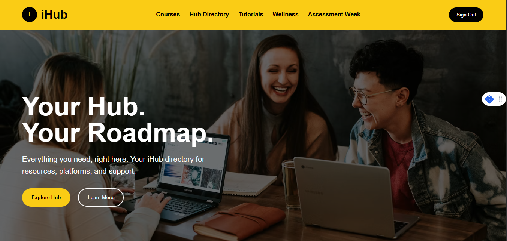
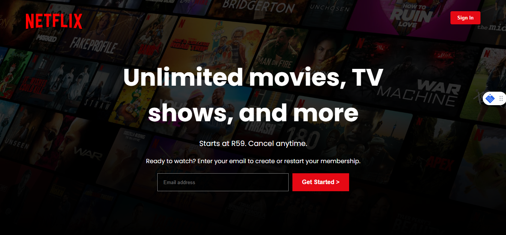

The first spark
I was drawn to technology the first time I noticed the invisible systems behind a screen. That curiosity started as a question and became a practice of building things that feel lived-in.
A grounded storyteller building digital systems that feel human, premium, and quietly confident.
I create web experiences shaped by curiosity, cultural rhythm, and the craft of turning ideas into calm, useful interfaces.
Story
I build products that feel calm, thoughtful, and grounded. This page is where I share the path that led me to design systems with warmth, care, and a clear sense of purpose.
I was drawn to technology the first time I noticed the invisible systems behind a screen. That curiosity started as a question and became a practice of building things that feel lived-in.
My work blends craftsmanship with clarity: clean interactions, thoughtful structure, and a premium tone that still feels human.
Tech Stack
Beyond names, this is my toolkit for creating polished interfaces, dependable logic, and thoughtful digital moments.
These are the materials I use to build warm, intentional experiences that feel easy to navigate and clear to use.
I design backend flows that support user needs and keep interactions stable without overwhelming the experience.
These tools help me ship work confidently, stay organized, and move from concept to polished product smoothly.
Every technology here is chosen for how it helps me turn ideas into grounded, premium work rather than just to sound impressive.
Featured Projects
Three focused builds presented through problem, approach, learning, and next improvement.
Featured / UI Platform
A responsive YouTube-inspired interface focused on video layout, navigation, content cards, and familiar media platform flow.

Featured / Interface Study
A platform recreation focused on layout accuracy, content sections, and translating an existing brand interface into code.

Featured / Streaming UI
A streaming-platform interface recreation focused on strong visuals, content browsing, and familiar entertainment patterns.
Case Studies
User need: A familiar video browsing layout that feels organized and easy to scan.
Design goal: Recreate the platform rhythm: navigation, content cards, spacing, and responsive behavior.
Next: Add richer interactivity, search behavior, and dynamic video data.
User need: A cinematic browsing page where content feels visual and accessible.
Design goal: Practice dark UI hierarchy, media sections, and entertainment-platform structure.
Next: Improve carousel interactions and connect content to a data source.
User need: More accessible digital spaces for socio-economic awareness and engagement in South Africa.
Design goal: Build a social activism platform concept around content structure, discussion, and real-world impact.
Next: Add user accounts, dynamic posts, and backend integration.
Experience Timeline
Built HTML/CSS confidence and learned how responsive layouts behave across devices.
Recreated real product interfaces to sharpen spacing, composition, and UI decision-making.
Used JavaScript for interaction and started thinking beyond static pages.
Growing into APIs, backend integration, databases, React concepts, and complete product builds.
Contact
I am open to opportunities, collaboration, and feedback.